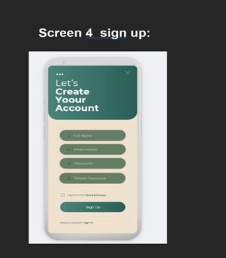

SanSun Wellness App
The SanSun Wellness App is a collaborative project designed to enhance user well-being by offering tailored healthy recipes, mood tracking, meditation sessions, and more. Developed using Flutter, the app provides a simple, user-friendly experience to support individuals in their wellness journey.
Key Features:
- Login: Allows users to log in to their accounts with validations, checking for the correct credentials provided.
- Dynamic Dashboard: Displays widgets for meditation, healthy recipes, and happiness insights, dynamically updating based on user data.
- Password Reset: If the user forgets their password, they can easily reset it providing the necessary information for this action.
- Account Creation: Allows users to create accounts with validations, including password matching and agreement to terms. 
- Healthy Recipes: Provides recipes filtered by meal type (Breakfast, Lunch, Dinner) and dietary restrictions (Gluten-Free, Vegan).
- Setting Configuration: Users can explore different settings to interact with the app.
Challenges Faced:
- UI/UX Design: Adapting designs to different screen resolutions and ensuring visual consistency.
- Data Management: Handling JSON files for user data storage presented issues with appending and updating entries.
- Integration: Combining the front-end design with backend functionality required extensive debugging and testing.
Team Contributions:
- Andrei Koshelev: Developed the "Login" and "Create Account" logic, implemented mood tracking with dynamic displays, and integrated the feedback system.
- Inguer Lara: Designed UI/UX, creating wireframes and refining app aesthetics.
- Malsini Masachchige: Focused on the dashboard and healthy recipes screen, ensuring seamless user interactions.
- Mohammad Patel: Assisted with backend logic, especially for JSON operations.
- Fathima Bukhari: Acted as project manager, coordinating tasks and ensuring timely deliverables.
Reflections:
- Andrei Koshelev: Gained valuable experience in handling JSON data and creating dynamic displays, which has inspired further learning in app development.
- Team Feedback: Highlighted the importance of collaboration and effective communication in achieving project goals.
Future Improvements:
- Introduce meditation sounds tailored to specific moods for a personalized experience.
- Upgrade data storage to PostgreSQL for enhanced security and scalability.
- Incorporate a dynamic dashboard theme that adapts to user-selected moods.
Reflection:
Developing the SanSun Wellness App was an enriching experience that combined technical skills and teamwork. The project demonstrated the potential of Flutter for cross-platform development while highlighting areas for improvement and innovation in future endeavors.